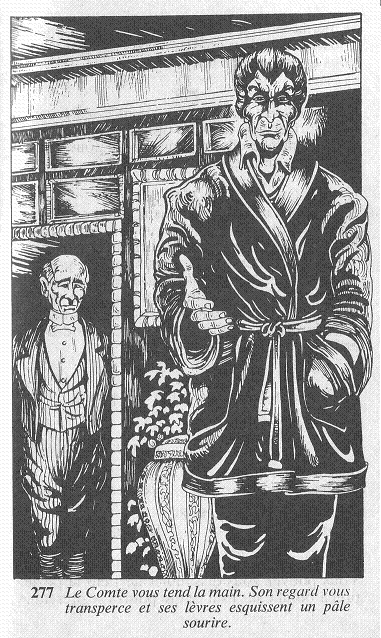

Vous entendez soudain un bruit de pas et l'homme vêtu de sombre réapparaît précédant un personnage de haute taille portant une veste d'intérieur pourpre. « Permettez-moi de vous présenter Lord Kelnor, Comte de Brume », dit-il. Le Comte vous tend la main. Son regard vous transperce et ses lèvres esquissent un pâle sourire.

A peine avez-vous commencé à lui raconter votre mésaventure qu'il vous interrompt d'un signe de la main. « Je vous en prie, dit-il. Je vois que vous avez été pris dans cette épouvantable tempête ; allons nous installer devant un bon feu, et voyons comment nous pouvons vous venir en aide. » Puis, se tournant vers son majordome, il ajoute : « Franklin, dites au cuisinier de préparer quelque chose de chaud pour notre visiteur. » Vous protestez en lui disant que vous ne voulez le déranger en aucune façon, mais, sans vous prêter la moindre attention, il vous conduit jusqu'à un salon où brûle un feu de bois. Vous vous débarrassez de votre manteau, et vous vous installez confortablement dans un fauteuil. Bientôt la chaleur du feu commence à chasser vos sombres pensées. D'autant plus que Franklin est vite de retour, portant un plateau sur lequel sont posés deux verres de cognac. Allez-vous vous détendre en dégustant le cognac, puis demander à votre hôte la permission d'utiliser le téléphone , ou préférez-vous attendre qu'il vous questionne ?